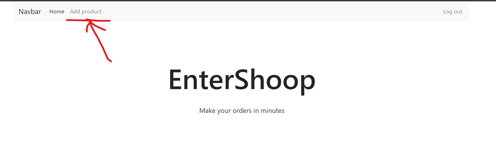

Курсова робота. Додвання компонент для адміністрування сайту
1. Додайте нову компоненту AddPoduct для додавання нового товару від імені адміна.
Компонентa AddPoduct
html для addPoduct.html (компоненти AddPoduct)
<div class="addProduct">
</div>
Стилі для компоненти AddPoduct
<style>
.addProduct{
}
</style>
2. Відображайте пункт "Add product" у меню тілкьки якщо користувач із правами адімністратора.

3. Створіть форму для додавання товару у базу данних в залежності від виду товару. Товар повинен мати обов'язково такі пункти:
- Назва товару
- Ціна товару
- Фото товару
Інші пункти в залежності від товару.
4. Товари зберігайте у firebase.
<script>
//приклад додавання об'єкту у firebase
db.collection("products")
.add({
name: "New product name",
price: 200,
logo: "https://logo.addres.com",
})
.then(() => console.log('product added to db'))
</script>
5. Стовріть метод який буде витягувати усі товари з firebase та зберігає їх у пам'яті вашої SPA. Викликайте його після додавання нового товару.